Table of Contents
Introduction
Price opens by explaining his method: rather than study modern degeneration directly, he went looking for population “controls” — isolated groups still free of it. He found them among primitive racial stocks around the world, and found that their immunity to modern disease vanished within a generation of adopting modern food, regardless of race, climate, or altitude.
Source text: Project Gutenberg Australia, eBook No. 0200251h
Summary
Price's method was simple to state and hard to execute: since modernized populations offered no baseline free of tooth decay and facial deformity, he needed living controls — groups still eating as their ancestors had. He found them as isolated remnants of primitive racial stocks on nearly every continent, and in every case the pattern held. Isolation plus a native diet meant high immunity to decay and normally formed dental arches; contact with modern food meant both were lost, quickly, and the loss showed up even in children born after the parents switched diets — a finding that undercut the era's common explanation that such deformities came from mixing racial bloodlines.
The effects Price catalogued went well past teeth. He describes facial and dental-arch changes as one visible marker of a broader disturbance that also showed up as lowered mental efficiency, school “backwardness,” and personality disturbance, including the unsocial and delinquent behavior he cites the 66 percent relapse figure for. He traces the root further back than the growing child, or even the mother's pregnancy, to the physical condition of both parents' “germ plasm” before conception — which is why, he found, a number of the primitive groups he studied required a period of special feeding, sometimes six months long, before a girl was permitted to marry.
Instead of the customary procedure of analyzing the expressions of degeneration, a search has been made for groups to be used as controls who are largely free from these affections.
Mass behavior therefore, in this new light becomes the result of natural forces, the expression of which may not be modified by propaganda but will require correction at the source.
Weston A. Price, IntroductionA very important phase of my investigations has been the obtaining of information from these various primitive racial groups indicating that they were conscious that such injuries would occur if the parents were not in excellent physical condition and nourishment. Indeed, in many groups I found that the girls were not allowed to be married until after they had had a period of special feeding. In some tribes a six months period of special nutrition was required before marriage. An examination of their foods has disclosed special nutritional factors which are utilized for this purpose.
Why Seek Wisdom from Primitive Peoples
Price lays out the case for the chapters that follow: primitive groups, studied both isolated and modernized, serve as Nature's own controlled experiment. He asks skeptical readers to defer judgment and test the pattern against their own family and community before dismissing it.
Source text: Project Gutenberg Australia, eBook No. 0200251h
Summary
Since modernized groups offered no population free of degeneration, Price argues, only primitive groups could supply a normal control against which to measure it. The chapters that follow describe named peoples and environments in their primitive state, set against members of the same stock living in contact with modernized whites, spanning wide differences of altitude, latitude, and climate. What struck Price was the similarity of the reaction each time contact was made: the specific culture and climate varied, but the direction and rough scale of the change — a thirty-five-fold rise in susceptibility to decay, and a matching rise in facial and dental-arch deformity — did not.
He anticipates the obvious objection before making it: that such changes are simply heredity, or the product of mixing racial bloodlines. His answer is that the same deformities appeared in the pure-blood children of a family, even the later children born after the parents had already switched to modern food — a pattern racial mixing cannot explain, but a change in parental nutrition can. He asks readers to defer judgment until they have applied the same yardstick to their own family, siblings, and community, confident that “almost everyone who studies the matter will be surprised” how much of this decline has gone unnoticed close to home.
No era in the long journey of mankind reveals in the skeletal remains such a terrible degeneration of teeth and bones as this brief modern period records.
Nature must be obeyed, not orthodoxy.
Weston A. Price, closing Chapter 1If the individuals in our modern society who are sufficiently defective to require some supervision are in part or largely the product of an injured parentage, who should be held responsible? Is it just for society to consign these unsocial individuals which it has made to a life of hard labor or confinement in depressing environments? Is it just for society to permit production of physical and mental cripples? Many primitive races apparently have prevented the distortions which find expressions in unsocial acts. If so, cannot modern society do this by studying and adopting the programs developed through centuries of experience by the primitives? Nature uses a written language which, without the keys, is made up of meaningless hieroglyphics, but which, with the proper keys, becomes a clear story of racial and individual history. The hieroglyphics indicate racial and individual disaster for modernized groups who heed not the warning story. The primitive races have some of these keys and have used them successfully in avoiding many of the disasters of our modern society.
What isolated groups showed
- High immunity to dental caries, at a level Price treats as the human baseline
- Broad, normally formed dental arches and facial bones, generation after generation
- Character and personality Price describes as sound, even under real hardship
What happened after modernization
- A thirty-five-fold average rise in susceptibility to tooth decay
- Facial and dental-arch deformity, appearing even in pure-blood children born after the parents' diet changed
- Personality and mental effects Price links to the same injured formative period, not to environment alone
Price's point in listing all three together: they rise and fall as one pattern, which is why he treats them as a single biological problem rather than three separate ones.
The Progressive Decline of Modern Civilization
Before turning to his own fieldwork, Price marshals a chorus of outside authorities — surgeons, anthropologists, public-health officials, criminologists — to establish that civilization itself was in measurable decline: rising heart disease and cancer, near-universal tooth decay, and a delinquency problem doctors and criminologists alike called mysterious in origin.
Source text: Project Gutenberg Australia, eBook No. 0200251h
Summary
Price opens with Dr. Alexis Carrel's warning that medicine had reduced infectious disease only to see degenerative disease rise in its place, then turns to the U.S. Surgeon General's own national health census: 2.66 million people surveyed, one in twenty too sick each day to work or attend school, an average of ten lost days a year per person. City health department records showed heart disease and cancer deaths climbing steadily for three decades. Sir Arbuthnot Lane, one of England's most senior surgeons, is quoted concluding that “there is something radically and fundamentally wrong with the civilized mode of life.”
Dental caries gets special attention as the single most widespread affliction of the modernized world, striking 85 to 100 percent of people in the communities Price cites. He quotes Harvard's Dr. Earnest Hooton calling the state of human teeth a threat to the survival of the species, and sets this against the prehistoric record: Dryer's study of skulls from South Africa's Matjes River Shelter found not one carious tooth, matching what Price calls the general rule among anthropologists that decay marks a skull as recent, never ancient.
The chapter's second half turns to mind and character, citing studies of delinquency and backwardness from London to Vermont to Chicago that repeatedly find the same thing: a majority of the children studied were physically unwell, and the researchers involved almost uniformly describe the underlying cause as obscure. Price's point in assembling this literature is not to solve delinquency himself, but to notice that no one else has explained it either — clearing the ground for his own claim that the missing piece is parental nutrition before conception, a subject the following chapters take up directly.
It is store food which has given us store teeth.
There is something radically and fundamentally wrong with the civilized mode of life, and… social decay and race deterioration are inevitable.
Dr. Earnest A. Hooton, Apes, Men and Morons (1937), quoted by PriceI firmly believe that the health of humanity is at stake, and that, unless steps are taken to discover preventives of tooth infection and correctives of dental deformation, the course of human evolution will lead downward to extinction. . . . The facts that we must face are, in brief, that human teeth and the human mouth have become, possibly under the influence of civilization, the foci of infections that undermine the entire bodily health of the species and that degenerative tendencies in evolution have manifested themselves in modern man to such an extent that our jaws are too small for the teeth which they are supposed to accommodate, and that, as a consequence, these teeth erupt so irregularly that their fundamental efficiency is often entirely or nearly destroyed.
Isolated & Modernized Swiss
In two summers of fieldwork, 1931 and 1932, Price worked his way through the high valleys of the Swiss Alps, comparing villages a few hours' walk apart — some still living on rye bread and dairy, some newly reached by road — to isolate what a diet built entirely from one steep valley's own soil was doing for its children's teeth.
Source text: Project Gutenberg Australia, eBook No. 0200251h
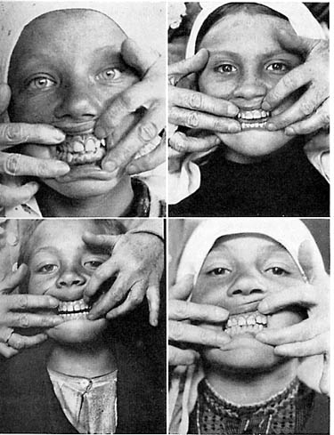
Summary
Price chose Switzerland to test a specific idea: that food grown at high elevation might carry extra nutritive value. The newly opened Loetschental Valley, made accessible by an eleven-mile rail tunnel just before 1931, gave him a community of 2,000 people who had produced nearly everything they ate — rye bread, milk, cheese — from their own steep ground for centuries, with neither doctor nor dentist because they had so little need of either. Children there living on the traditional diet of rye bread, cheese and milk averaged 0.3 cavities per person, examined between ages seven and sixteen. In 1932 Price extended the survey to isolated Alpine hamlets in the Canton of Wallis: Grachen and the village of Ayer each showed only 2.3 decayed teeth per hundred examined.
The sharpest comparison came in the Val d'Anniviers, where Ayer's neighboring village Vissoie, reachable by the same walk in about an hour, had recently gained road access to modern food. Its children's decay rate ran to 20.2 per hundred teeth — a ninefold jump over Ayer's 2.3, with the same terrain, climate and access to sea foods, differing only in what came off the delivery truck. Across the four isolated valleys combined, only 3.4 percent of 4,280 teeth examined showed any decay.
For a deliberate contrast, Price turned to St. Moritz, the famous Alpine resort with the best of modern dentistry and prophylaxis available, and to Herisau, in the district around Lake Constance where officials recorded close to 100 percent of the population affected by caries. At St. Moritz, 29.8 percent of teeth in children eight to fifteen were already decayed; at Herisau, 25.5 percent of 2,065 teeth examined, with only 4 percent of children entirely free of the disease. In both places only about 11 percent of the children studied drank milk with any regularity, against 100 percent in the isolated valleys. Price closes by noting that skulls exhumed from Swiss cemeteries more than a century old show almost perfect teeth, while recent burials are “riddled with caries” — the same isolation-to-modernization pattern, read straight out of the ground.
They have neither physician nor dentist because they have so little need for them; they have neither policeman nor jail, because they have no need for them.
The objection was made that there was no use trying to save the teeth of the girls… because if they did not [have them extracted], they would lose them anyway.
Weston A. Price, on the Loetschental Valley's Corpus Christi ceremonyFrom Dr. Siegen, I learned much about the life and customs of these people. He told me that they recognize the presence of Divinity in the life-giving qualities of the butter made in June when the cows have arrived for pasturage near the glaciers. He gathers the people together to thank the kind Father for the evidence of his Being in the life-giving qualities of butter and cheese made when the cows eat the grass near the snow line. This worshipful program includes the lighting of a wick in a bowl of the first butter made after the cows have reached the luscious summer pasturage. This wick is permitted to burn in a special sanctuary built for the purpose. The natives of the valley are able to recognize the superior quality of their June butter, and, without knowing exactly why, pay it due homage.
What the isolated diet was
- Whole rye bread & summer-made cheese, eaten together as the daily staple
- Fresh milk, from goats or cows, drunk liberally by nearly every child
- Meat about once a week, usually a shared sheep divided among several families
- In Visperterminen alone, local wine from Europe's highest vineyards
What replaced it
- White-flour bread, eaten by nearly every child studied at St. Moritz and Herisau
- Marmalades, jams, sweetened fruit & milk chocolate — a major export use for the very milk the isolated valleys drank fresh
- Canned vegetables & confections, shipped in once rail or road access arrived
Only about 11 percent of the children Price studied at St. Moritz and Herisau drank milk regularly, against 100 percent in the isolated valleys — the milk instead going largely into chocolate for export.
Seven villages, four Swiss cantons
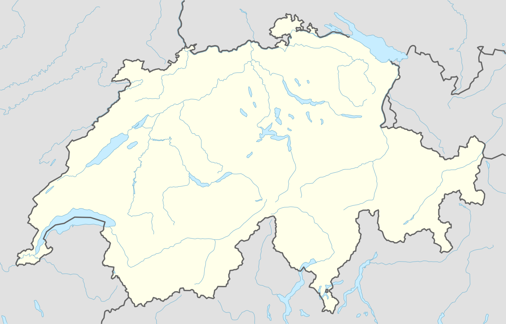
Decay, isolated valleys to famous resort
Percent of teeth with dental caries · every Swiss group Price tabulated
Four plates from the chapter
Original figure numbers and captions, Price's own
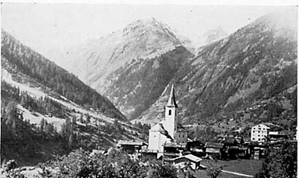
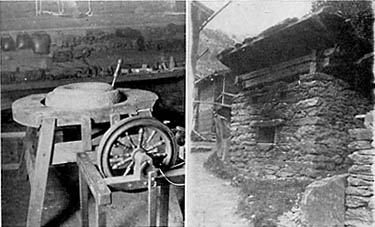
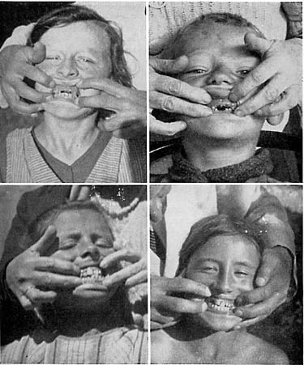
Isolated & Modernized Gaelics
Off the northwest coast of Scotland, Price sought out the fisherfolk and crofters of the Outer Hebrides, whose oat-and-seafood diet had built teeth so sound the islands were already famous for them — then followed the same bloodline south, island by island, to where white bread and jam had already arrived.
Source text: Project Gutenberg Australia, eBook No. 0200251h
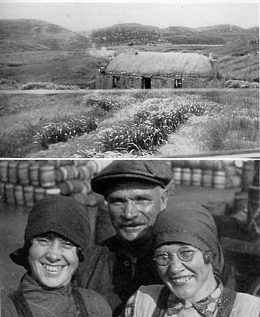
Summary
The Outer Hebrides had long been famous for the health of their people, and Price went to test why. The Isle of Lewis has almost no lime in its soil and almost no trees; its roughly 20,000 fisherfolk and crofters lived on fish, oats and barley, with baked cod's head stuffed with cod liver and oatmeal a particular favorite. In the island's interior, only 1.3 teeth per hundred examined in growing children had ever been attacked by decay. At Scalpay, on the Isle of Harris, dependent on oatmeal, oatcake and sea food, the figure was even lower: 1 tooth per hundred.
The clearest single experiment came on the Isle of Skye, at a place called Airth of Sleat, where a daily steamboat had just begun delivering modern food to part of the community while the rest continued on native foods. Price examined both groups directly: those still on primitive foods had 0.7 carious teeth per hundred, against 16.3 per hundred for those already eating modern food — twenty-three times the rate, in the same village, same climate, same access to the sea. He found the same pattern within a single family on the Isle of Harris: of two brothers eating at the same table, the one still on oatmeal and sea food had excellent teeth, while the one who insisted on white bread, jam and sweetened coffee had lost several teeth already.
Modernization showed its clearest face at the port towns. In Stornoway, Lewis's one seaport, a count of 100 adults aged twenty to forty found 25 already wearing false teeth, with the town's shops stocked full of white bread, jams and confections. Tarbert, the shipping port for Harris tweed just ten miles from oat-fed Scalpay, had 32.4 decayed teeth per hundred. On the Welsh island of Bardsey, resettled with fifty new families after tuberculosis had nearly emptied it, the figure reached 27.6 per hundred, active even in three-year-olds — and local officials, asked the cause, blamed the sea air rather than the imported flour and sugar now filling the one general store.
Those living on primitive foods had only 0.7 carious teeth per hundred, while those in the group living on modern foods had 16.3, or twenty-three times as many.
He said that it was no use to have any teeth filled, that he would have to lose them anyway since that was everybody's experience in Tarbert.
Weston A. Price, on the Isle of HarrisWe found a family on the opposite coast of the island where the two boys shown in the upper half of Fig. 6 resided. One had excellent teeth and the other had rampant caries. These boys were brothers eating at the same table. The older boy, with excellent teeth, was still enjoying primitive food of oatmeal and oatcake and sea foods with some limited dairy products. The younger boy, seen to the left, had extensive tooth decay. Many teeth were missing including two in the front. He insisted on having white bread, jam, highly sweetened coffee and also sweet chocolates. His father told me with deep concern how difficult it was for this boy to get up in the morning and go to work.
What the native diet was
- Oatmeal porridge & oatcake, eaten with nearly every meal
- Baked cod's head, stuffed with chopped cod's liver and oatmeal
- Lobsters, crabs, oysters & clams, abundant and cheap around the Outer Hebrides
- A little barley and very limited dairy, since pasturage on Lewis is extremely poor
What replaced it
- White bread “as snow white as that to be found in any community in the world”, per Price's own note on Stornoway's shop windows
- Jam, marmalade, sweetened coffee & chocolates — named exactly in the account of the two brothers
- Canned vegetables & sweetened fruit juices, arriving by the same steamboats that brought modern flour
At Airth of Sleat, the same daily steamboat that finally reached the island carried both the modern food and the twenty-three-fold rise in decay that followed it.
Outer Hebrides to Wales
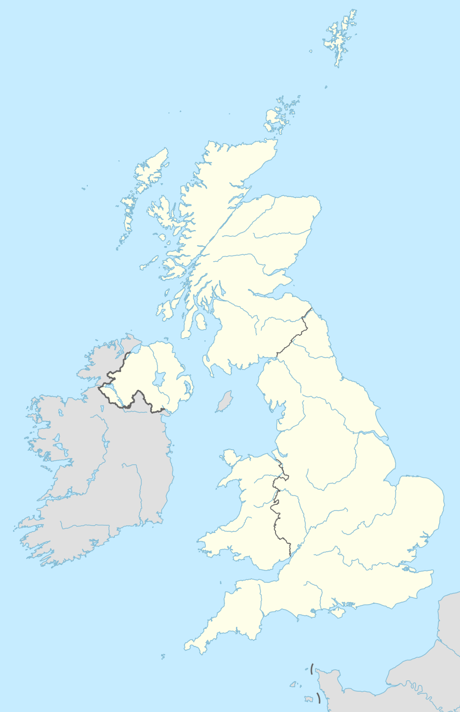
Shown at the scale of Great Britain, from the Outer Hebrides to Wales; Taransay and Scarpa, two islands off Harris that Price was unable to reach by boat, are mentioned in the text but not plotted.
Decay, oat-fed islands to modern ports
Percent of teeth with dental caries · every Gaelic group Price tabulated
Four plates from the chapter
Original figure numbers and captions, Price's own
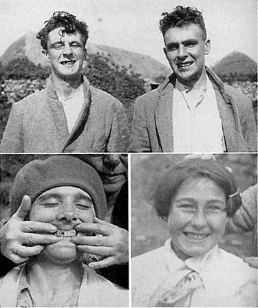
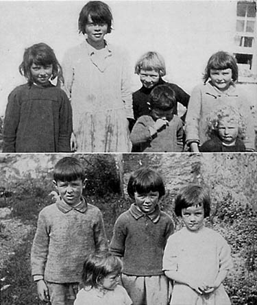
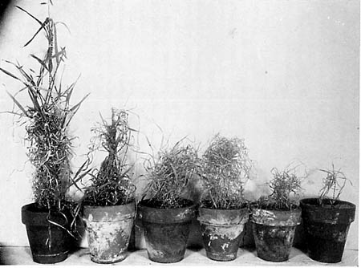
Isolated & Modernized Eskimos
In 1933, chartering a bush plane over the Alaska Range, Weston Price went looking for the most isolated Eskimo communities left on the Kuskokwim — to find out what a diet of seal oil, salmon roe and caribou had built, and how fast it came apart.
Source text: Project Gutenberg Australia, eBook No. 0200251h
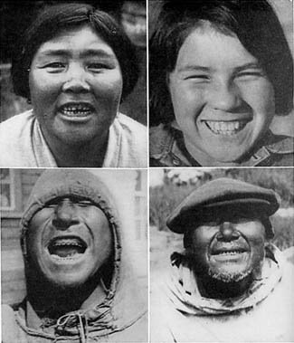
Summary
Price treated the Eskimo as a control group nature had already run for thousands of years: a Stone Age population still living, at the edge of survivable climate, entirely on what the land and sea provided. Working with leads from anthropologist Aleš Hrdlička, he and his wife flew from Anchorage over the Alaska Range to reach villages along the lower Kuskokwim River — Stony River, Sleetmute, Crooked Creek, Napaimute, Bethel, Kokamute, Bethel Island — then on to Holy Cross on the Yukon and McGrath on the upper Kuskokwim, examining teeth village by village and separating each population into those still eating native foods and those already eating imported ones.
The pattern held everywhere he looked. Isolated groups living on salmon, seal oil, fish eggs, caribou, kelp and stored berries showed almost no tooth decay at all — in several villages, literally none. The moment a household's diet shifted to the packaged “store grub” carried in by the government supply boat, decay rates jumped twenty, thirty, even forty-fold within that same generation, and it struck children born after the switch hardest of all: the first Eskimo generation raised on modern food developed narrowed dental arches and crowded teeth their parents never had, a change in bone growth Price documented as vividly among two white children raised in an Alaskan mining camp on imported food (Fig. 14) as among Eskimo children themselves.
Price closes the chapter on the human cost behind the statistics: an Eskimo population already reported to have halved in seventy-five years, a life expectancy contemporaries put at twenty years, and villages hundreds of miles from the nearest dentist, so that decay a native diet would have prevented outright became, for the modernized, a source of prolonged and untreated suffering.
An average adult Eskimo man can carry one hundred pounds in each hand and one hundred pounds in his teeth with ease for a considerable distance.
Due to susceptibility to tuberculosis and other diseases the average life span of the Eskimo of Alaska is only 20 years, and their race is doomed to extinction within a few generations.
What the native diet was
- Salmon — speared from kayaks, dried and smoked in quantity for winter
- Seal oil — fish dipped in it at every meal; Price assayed it as one of the richest sources of vitamin A he ever found
- Fish eggs (salmon roe) — dried on racks, a staple for weaned children
- Seal — hunted from kayaks alongside salmon
- Caribou
- Ground nuts — raided from the caches mice store them in
- Kelp — gathered in season, stored for winter
- Berries, including cranberries — preserved by freezing
- Flower blossoms & sorrel grass — both preserved in seal oil
- Frozen fish
- Organs of large sea animals, and certain layers of whale skin — found very high in vitamin C
What replaced it
- “Store grub” — the Eskimos' own term for anything bought rather than caught
- Modern foods shipped up the Kuskokwim by the government supply boat to Bethel
- Foods sent “in package form” from the United States to mining-camp families
- Imported foods, generally — the chapter's own word for the rest
Price never itemizes it further than this. The chapter names every native food by species; the modern diet stays an anonymous, packaged abstraction — which is rather the point.
The 1933 field route
Detail — stops 2–5, roughly 100 km of the middle Kuskokwim
Caries, by village and by diet
Percent of teeth with dental caries · native vs. modern/imported diet
Six plates from the chapter
Original figure numbers and captions, Price's own
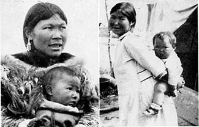
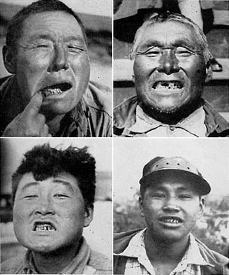
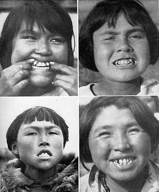
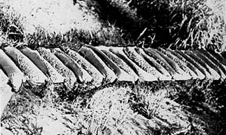
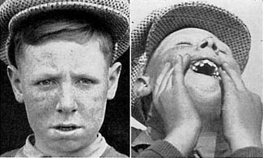
Primitive & Modernized North American Indians
In 1933, Price followed one racial stock, the American Indian, across an entire continent — from sub-Arctic forest bands north of the Stikine River to the Everglades of Florida — to see how isolation and native food shaped a people from the Arctic to the tropics, and what changed the moment white commerce arrived.
Source text: Project Gutenberg Australia, eBook No. 0200251h
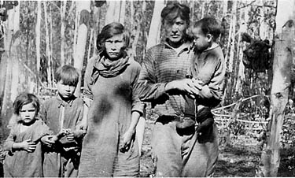
Summary
This chapter follows one racial stock, the American Indian, across every climate the continent has to offer, to see whether isolation and native food produced the same near-immunity to disease everywhere, not just at one latitude. Price pushed a river launch up the Stikine from the Alaska panhandle to Telegraph Creek, then by truck and scow down the Dease and Liard toward the Arctic watershed to reach nomadic bands who had never signed treaty with Ottawa. From there he worked his way back through the settled world: the Six Nations Reserve at Brantford, Ontario; the Tuscarora near Niagara Falls; a reservation on Lake Winnipeg; the Pacific Coast from Vancouver to Ketchikan, Juneau, Sitka and Anchorage; and finally the pre-Columbian burial mounds and living Seminole of Florida, at the opposite end of the continent and the climate.
The result was the same cliff, everywhere. Bands still living on moose, caribou, salmon and organ meat showed almost no tooth decay at all — in several groups, literally none, including in skulls pulled from Florida burial mounds centuries old. The moment a group settled near a trading post, a mission school or a reservation town and took up white flour, sugar and canned goods, decay climbed to somewhere between one in seven and one in two teeth, and tuberculosis and arthritis — diseases the isolated bands seemed simply not to get — appeared with it. An old hunter told Price, through an interpreter, exactly how his people avoided scurvy: two small glands from behind a moose's kidney, shared out piece by piece among the family. Price had it assayed. They were eating the richest natural source of vitamin C then known to science, and calling it nothing more than what everyone's grandfather had always done.
Price closes the chapter on the same note as the last: the Indians he met largely knew what was happening to them, and wanted no part of it. He reprints a 1938 wire story in full — five Oklahoma tribes petitioning Washington for new land explicitly barred to white men — and calls their instinct for isolation, bluntly, the wiser policy.
Five Indian tribes in Oklahoma are “fed up” with white civilization and want new, secluded tribal lands… where the redman may hunt and fish as his ancestors did.
Weston A. Price, told through an interpreter, on the Stikine watershed, 1933When I asked an old Indian, through an interpreter, why the Indians did not get scurvy he replied promptly that that was a white man's disease. I asked whether it was possible for the Indians to get scurvy. He replied that it was, but said that the Indians know how to prevent it and the white man does not. When asked why he did not tell the white man how, his reply was that the white man knew too much to ask the Indian anything. I then asked him if he would tell me. He said he would if the chief said he might. He went to see the chief and returned in about an hour, saying that the chief said he could tell me because I was a friend of the Indians and had come to tell the Indians not to eat the food in the white man's store. He took me by the hand and led me to a log where we both sat down. He then described how when the Indian kills a moose he opens it up and at the back of the moose just above the kidney there are what he described as two small balls in the fat. These he said the Indian would take and cut up into as many pieces as there were little and big Indians in the family and each one would eat his piece. They would eat also the walls of the second stomach. By eating these parts of the animal the Indians would keep free from scurvy, which is due to the lack of vitamin C. The Indians were getting vitamin C from the adrenal glands and organs. Modern science has very recently discovered that the adrenal glands are the richest sources of vitamin C in all animal or plant tissues.
What the native diet was
- Moose & caribou — the staple of the sub-Arctic interior bands
- Two small glands behind a moose's kidney, and the walls of its second stomach — the Indians' own scurvy remedy; Price assayed the glands as exceptionally rich in vitamin C
- Deer, fresh and dried fish, and fish eggs — a seventy-year-old Sitka native's lifelong diet, and free of decay to match
- Seaweed
- Oolachan (candlefish) oil — a small, oil-rich fish burned as a candle, traded inland for furs
- Salmon — dried and stored through the winter at Eklutna
- Cranberries & a few vegetables
What replaced it
- White flour & white bread
- Sugar, syrups & confections — “pop and candy,” bought at the lacrosse-match stand
- Jams & marmalades
- Canned vegetables — and, on the Pacific Coast, canned salmon, bought rather than caught
- Potatoes
- Commercial vegetable fats
Price names the modern staples specifically here, right down to the sugar, the flour, the jams and the pop and candy sold at the lacrosse match. The result is the same cliff in decay, reservation after reservation, coast to coast.
Where he looked, coast to coast

Every site Price named, ranked
Percent of teeth with dental caries · Price's own end-of-chapter tally, sorted low to high
Eight plates from the chapter
Original figure numbers and captions, Price's own
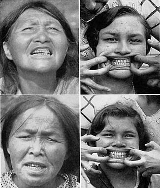
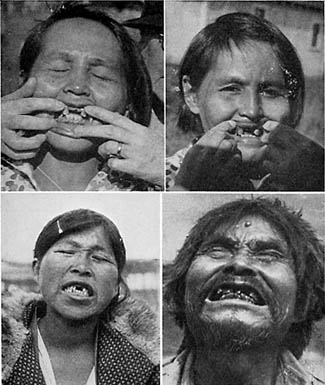
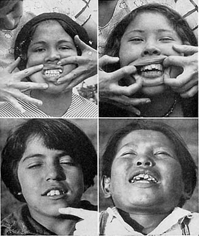
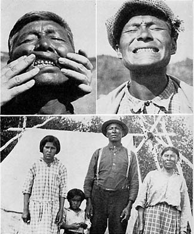
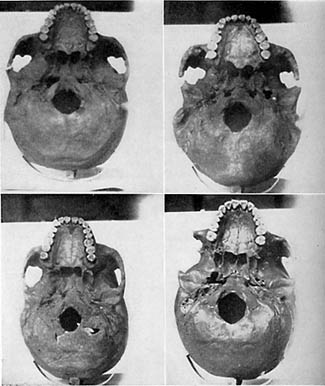
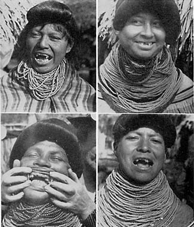
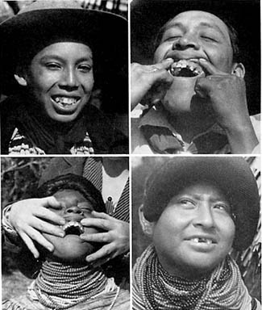
Isolated & Modernized Melanesians
In 1934, and again in 1936, Price left North America for the tropics for the first time in his fieldwork — testing his pattern against a new climate, a new racial stock and an ocean of isolation: the Melanesians of New Caledonia and Fiji.
Source text: Project Gutenberg Australia, eBook No. 0200251h
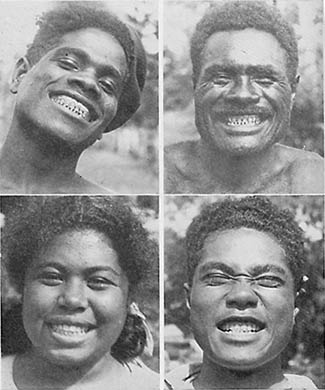
Summary
This chapter leaves North America for the tropics: Melanesian populations on New Caledonia and Fiji, two island groups under French and British administration roughly a thousand miles apart in the South Pacific. Reaching the isolated bands meant government interpreters, formal receptions with local chiefs, and hard travel on volcanic mountain trails — but Price found the same cordial welcome everywhere, villages that seemed, through what he called the “underground telegraph,” to already know he was coming.
The pattern held. On New Caledonia, natives living almost entirely on native sea and land foods had a caries rate of just 0.14 percent; those trading at the French port of Nouméa for flour and sugar had 26 percent. On Fiji, Price tried to find a village far enough inland to live on land food alone, and failed: even during open warfare, hill tribes and coastal tribes kept up a nightly cache exchange of mountain plants for sea food, each side's couriers left unmolested by the other. Isolated Fijians had a caries rate of 0.42 percent; those at the ports and sugar plantations, 30.1 percent. Government trade statistics made the mechanism plain: white flour and sugar alone accounted for ninety percent of everything shipped to these islands in exchange for copra.
As everywhere else, the damage showed up first in the next generation: children born after their parents adopted the trader's foods developed narrowed faces and crowded teeth their parents never had. Indentured laborers from India and China, brought in for the sugar plantations, had by then intermarried with Melanesians around every port — and Price found no difference in decay traceable to ancestry at all. It was the food, not the blood.
No dentists or physicians are available on most of these islands. Toothache is the only cause of suicide.
He gave us very important information regarding the origin of cannibalism, relating it to a recognition of special food values of special organs, particularly the livers.
Weston A. Price, describing the hunt on Viti Levu, Fiji, 1934Another animal food was that from coconut crabs which grow to a weight of several pounds. At certain seasons of the year the crabs migrate to the sea in great numbers from the mountains and interior country. They spend about three days in the sea for part of their reproductive program and return later to their mountain habitats. Their routes of travel are as nearly as possible in straight lines. At the season of migration, large numbers of the crabs are captured for food. These crabs rob the coconut trees of fruit. They climb the trees during the darkness and return to the ground before the dawn. They cut off the coconuts and allow them to drop to the ground. When the natives hear coconuts dropping in the night they put a girdle of grass around the tree fifteen or twenty feet from the ground, and when the crabs back down and touch the grass they think that they are down on the ground, let go their hold and are stunned by the fall. The natives then collect the crabs and put them in a pen where they are fed on shredded coconut. In two weeks' time the crabs are so fat that they burst their shells. They are then very delicious eating.
What the native diet was
- Sea foods generally — fish and shellfish, judged essential enough that warring hill and coast tribes traded them by night even in open conflict
- Coconut crabs — trapped by tricking them into a fatal fall, then penned and fattened on shredded coconut until they burst their shells
- Wild pig — originally imported, gone feral, hunted in the bush
- Freshwater fish — from the mountain streams
- Coconut oil — rubbed on the body against sun and rain, and eaten as a food source in its own right
- Plant foods and fruits from the land — carried down from the mountains and left in coastal caches overnight in exchange for sea food
What replaced it
- White flour & sugar — together, ninety percent of everything traded to the islands for copra and dried coconut, by the government's own statistics
- Canned foods
- Polished rice
- Sweetened goods
Price found no difference in caries between full-blooded Melanesians and those intermarried with the Indian and Chinese laborers brought in for the sugar plantations. Ancestry didn't move the needle here; only which of these two lists a person ate from did.
Two islands in the South Pacific
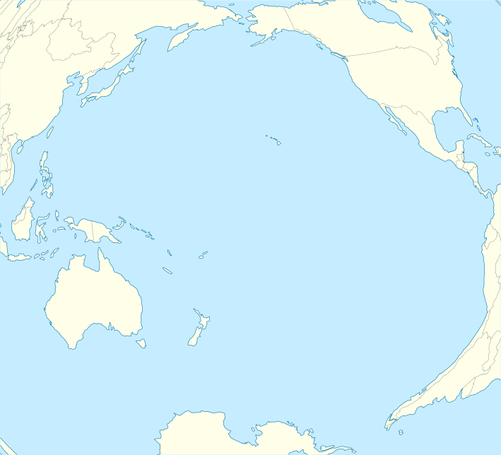
Native diet against trade diet, island by island
Percent of teeth with dental caries · New Caledonia and Fiji
Six plates from the chapter
Original figure numbers and captions, Price's own
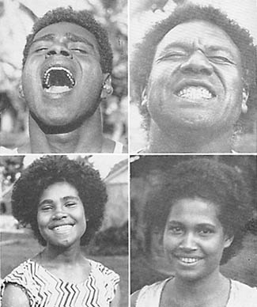
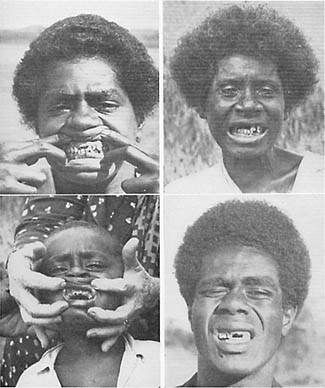
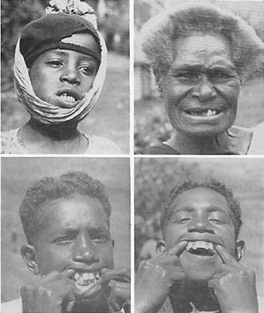
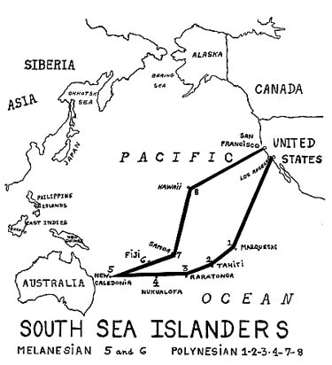
Isolated & Modernized Polynesians
Six island groups, one racial stock: Price traced the Polynesians from the Marquesas and Tahiti to the Cook Islands, Tonga, Samoa and Hawaii, watching the same trade ships that carried away copra carry back the flour and sugar that would remake a people's teeth and faces within a generation.
Source text: Project Gutenberg Australia, eBook No. 0200251h
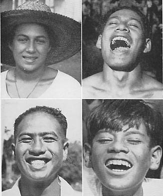
Summary
This chapter follows the Polynesians across six island groups scattered over thousands of miles of open Pacific: the Marquesas, Tahiti and the Society Islands, the Cook Islands, Tonga, Samoa and Hawaii. Early navigators had called the Marquesas the Garden of Eden for the beauty and health of its people; by the time Price arrived, tuberculosis and smallpox had cut a population once past a hundred thousand down to about two thousand, and trade food had already displaced native food almost everywhere he could find people to examine.
Group after group told the same story. Isolated Rarotongans on the Cook Islands had a caries rate of 0.3 percent; those trading at the port of Avarua, 29.5 percent. Isolated Tongans, 0.6 percent; those near the port, 33.4 percent. Isolated American Samoans, 0.3 percent; those with access to the main port of Pago Pago, 18.7 percent. Isolated Hawaiians, 2 percent; those on largely imported food, 37.3 percent. On Tahiti, natives still living entirely on native foods had no measurable decay at all; those using trade flour, sugar and canned goods, 31.9 percent. Only in the Marquesas, where almost no one still lived on native foods alone, was there no isolated group left to measure — just the 36.9 percent already common at the one trading port Price could reach.
Tonga supplied the chapter's sharpest piece of evidence, because for once Price could compare an island against itself, before and after, rather than against its neighbor. When postwar copra prices spiked from $40 to $400 a ton, trading ships suddenly found it worth the trip, and brought flour and sugar with them; decay in the growing children of that period climbed accordingly. By the time Price examined them the price of copra had collapsed to $4 a ton, the ships had stopped calling, and decay had “largely ceased to be active” right along with them — the same population, the same islands, the disease turning off almost as fast as it had turned on.
If one will picture a community of several thousand people with an average of 30 per cent of all the teeth attacked by dental caries and not a single dentist or dental instrument available… a slight realization is had of the mass suffering that has to be endured.
They will not step aside to allow anyone to pass since they say that when the world was created and populated they were the first to be made, next was the pig, and last the white man.
Weston A. Price, on the Tongan IslandsThe limited importation of foods to the Tongan Islands due to the infrequent call of merchant or trading ships has required the people to remain largely on their native foods. Following the war, however, the price of copra went up from $40.00 per ton to $400.00, which brought trading ships with white flour and sugar to exchange for the copra. The effect of this is shown very clearly in the condition of the teeth. The incidence of dental caries among the isolated groups living on native foods was 0.6 per cent, while for those around the port living in part on trade foods, it is 33.4 per cent. The effect of the imported food was clearly to be seen on the teeth of the people who were in the growth stage at that time. Now the trader ships no longer call and this forced isolation is very clearly a blessing in disguise. Dental caries has largely ceased to be active since imported foods became scarce, for the price of copra fell to $4.00 a ton. The temporary rise in tooth decay was apparently directly associated with the calling of trader ships.
What the native diet was
- Sea foods generally — “both soft- and hard-shell forms,” the constant across every island group
- Octopus, sea crab & bêche-de-mer — eaten raw in American Samoa
- Shellfish — gathered and sold largely by Samoa's young people
- Taro — cooked, dried, powdered, then fermented a day or more into “poi,” the Hawaiian staple eaten straight off the fingers
- Land plants and fruits, cooked in an underground oven of hot stones — common to nearly every island in the study
What replaced it
- White flour & sugar — the trade good exchanged directly for copra on every island group
- Sugar products & syrup
- Polished rice
- Canned goods
- Sweetened goods
Copra — dried coconut meat, the islands' one cash export — was the currency this whole exchange ran on. Its price on the world market decided, almost directly, how many trading ships called and how much decay followed them.
Six island groups, one ocean
Native diet against trade diet, six times over
Percent of teeth with dental caries · each Polynesian island group Price examined
Six plates from the chapter
Original figure numbers and captions, Price's own
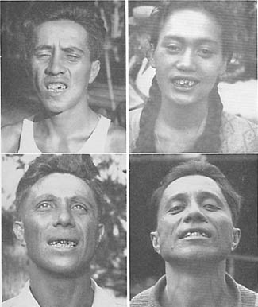
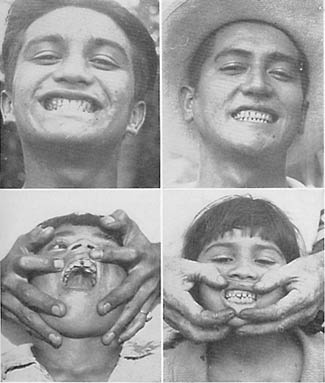
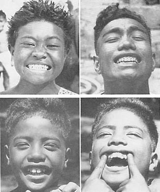
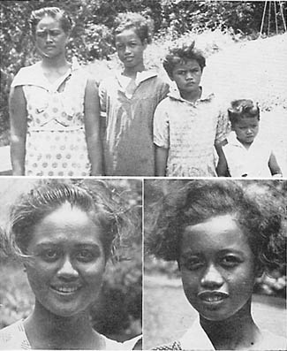
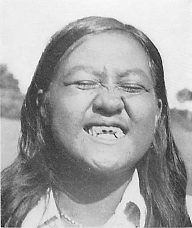
Isolated & Modernized African Tribes
In 1935, Price crossed the African interior from the Kenyan coast to Cairo — roughly 6,000 miles overland and down the Nile — examining thirty tribes across Kenya, Uganda, the Belgian Congo, Ruanda, Sudan and Egypt, by far the widest single survey of his fieldwork.
Source text: Project Gutenberg Australia, eBook No. 0200251h
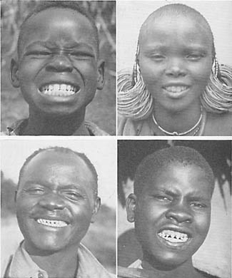
Summary
This chapter leaves the coasts and islands behind for a continental interior: the plateau country of eastern and central Africa, chosen because it let Price study primitive people living far from any sea, under conditions closer to those of Europe or the American Midwest than anything he'd examined before. Over a single safari he made contact with about thirty tribes, tabulating results for twenty-seven of them — cattle-herding Nilotic peoples like the Masai and Muhima, agricultural Bantu tribes like the Kikuyu and Wakamba, forest pygmies, Nile fishing tribes, Arab schools in Sudan and Egypt — a wider cross-section of one continent's diet than any other chapter attempts.
Diet, not tribe, tracked the outcome. Cattle people living on milk, meat and blood — the Masai, the Muhima, the Sudanese Nilotic tribes — showed almost no decay at all: six tribes had not one carious tooth or malformed arch among them. Grain- and vegetable-farming tribes like the Kikuyu and Wakamba, still entirely on native food, ran higher, around 5–6 percent. Every group that had taken up “the foods of modern commerce” converged toward the same range regardless of which of the thirty tribes they'd started as: an Arab school in modernized Khartoum ran higher than the same school's counterpart across the river in largely untouched Omdurman; a highly modernized native school in Cairo topped the whole survey at 12.1 percent, the worst result of any group studied on the continent.
Facial and dental-arch deformity followed the same line. Thirteen of the twenty-seven groups had not one individual with a crooked or malformed arch; the Masai, purely on their cattle diet, ran to just 3.4 percent irregularity, against 18–19 percent for the grain-farming tribes and 70 percent in one modernized hospital population. Price closes on a harder note than usual: population collapse already underway in several districts, mission-school students openly asking him why the families raised in the missions were physically weaker than those who'd never set foot in one.
They have a belief which to them is their religion, namely, that every man and woman has a soul which resides in the liver and that a man's character and physical growth depend upon how well he feeds that soul by eating the livers of animals.
They are reported to have known for over two hundred years that malaria was carried by mosquitoes, and further they have practiced exposing members of their tribe infected with syphilis to malaria… Yet modern medicine boasts of being the discoverers of this great principle.
Weston A. Price, on the Masai, East Africa, 1935They milk the cows daily and bleed the steers at regular intervals by a unique process. In Fig. 40 we see a native Masai with his bow and arrow, the latter tipped with a sharp knife which is guarded by a shoulder to determine the depth to which the arrow may enter the vein. If the animal is sufficiently tame, the blood is drawn while it is standing. If the animal is frightened it is quickly hobbled, as shown below. In this figure the stream of blood may be seen spurting from the jugular vein into a gourd which holds about a gallon. A torque is placed around the neck before the puncture is made. The animals did not even flinch when struck by the arrow, the operation is done so quickly and skillfully. When sufficient blood was drawn, the torque was removed and the blood immediately stopped flowing. A styptic made of ashes referred to above was used. This serves also to protect the wound from infection. The blood is defibrinated by whipping in the gourd. The fibrin is fried or cooked much as bacon or meat would be prepared. The defibrinated blood is used raw just as the milk is, except in smaller quantities. When available, each growing child receives a day's ration of blood as does each pregnant or lactating woman. Formerly, the warriors used this food exclusively.
What the native diet was
- Milk, meat & blood — the cattle-herding tribes' staple; blood drawn from a living animal's neck vein, defibrinated, the fibrin fried like bacon
- Sweet potatoes, corn, beans, millet & Kafir corn — the agricultural tribes' staple, together with bananas
- Fresh-water fish, dried and carried far inland — the Nile perch reaching 150 pounds
- Insects and their eggs — including a fly that hatches by the millions in Lake Victoria, gathered fresh and dried for storage, plus ants and ant eggs
- Camel's milk — the mainstay of desert Arab nomads for months at a stretch
- Liver and other organs, eaten raw and cooked — sacred enough among the Nilotic tribes to be handled only with a spear or forked stick, never bare hands
What replaced it
- White flour & sugar
- Polished rice
- Canned goods
- “European foods,” generally — the chapter's own catch-all for the imported diet of mission and plantation contact
Several tribes put girls on a special diet for months before marriage, and put mothers on a special diet before every pregnancy — deliberate preconception nutrition, standard practice long before the term existed.
Kenya, Uganda & the Belgian Congo
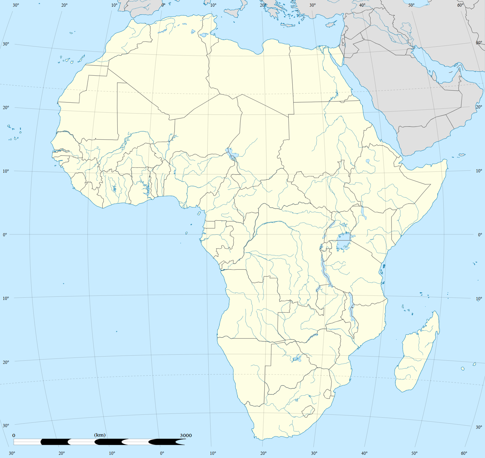
Not pictured: Khartoum, Omdurman, Malakal and Jebelein (Sudan) and Cairo (Egypt) — several hundred miles further down the Nile from the cluster above. Their figures are still in the chart and stops below.
A cross-section of the survey, ranked
Percent of teeth with dental caries · fifteen of the twenty-seven groups Price tabulated
Eight plates from the chapter
Original figure numbers and captions, Price's own
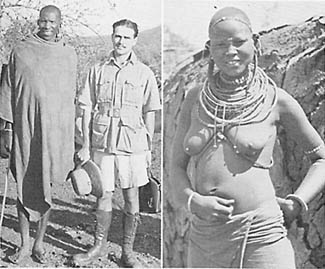
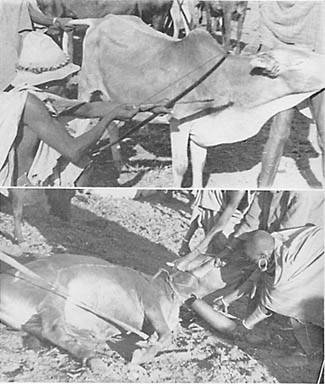
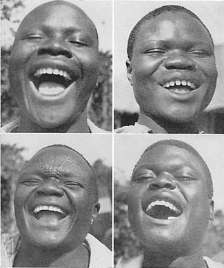
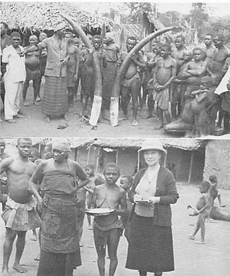
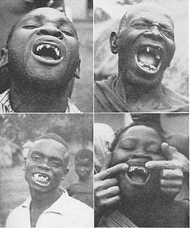
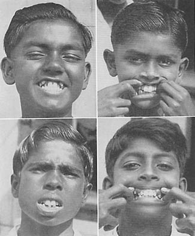
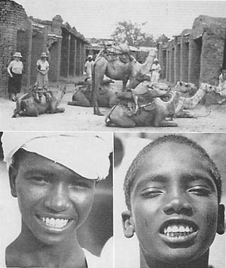
Isolated & Modernized Australian Aborigines
In 1936, Price examined Aboriginal Australians across seven government reservations and missions strung down Queensland and New South Wales — a people he called probably the oldest living race, whose isolated members he found in near-perfect dental health across some of the driest, harshest country he had studied anywhere.
Source text: Project Gutenberg Australia, eBook No. 0200251h
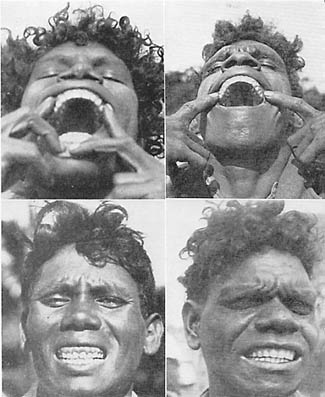
Summary
This chapter turns to Australia, examined in 1936: a continent Price calls home to probably the oldest living race, isolated so long behind a submerged land bridge that its animal life — the platypus, the marsupials — survives nowhere else on earth outside fossil form. He found the Aborigines' skeletal and dental development remarkably uniform and remarkably good, whether he was measuring living people in the bush or skulls pulled from museum collections in Sydney and Canberra: broad faces, wide dental arches, and, on native food, almost no decay at all — across a landscape so dry that over half the continent gets under ten inches of rain a year.
Every reservation told some version of the same story, but at very different severity depending on how completely native food had been displaced. At Lockhart River, still close to self-sufficient on land and sea, decay ran to just 4.3 percent of teeth. At Palm Island and Cape Bedford, more dependent on mission and government supply, it ran to 8.9 and 12.4 percent. At Cowal Creek, Tweed Heads, Cherbourg and La Perouse — the last on some of the most thoroughly modernized land in the country, near Sydney — it climbed to 24.6, 39.7, 42.5 and, worst of all, 47.5 percent, with women's teeth at La Perouse alone running to 81.3 percent decayed.
The cleanest single piece of evidence came from a Torres Strait pearl-fishing crew of eighteen men, split cleanly by upbringing: the thirteen raised in the Bush had not one decayed tooth or malformed arch between them; the five raised in missions already had close to a fifth of their teeth decayed. Price closes on a pattern identical to every other population he studied: children born after their parents adopted government rations developed a crowding and narrowing of the face their parents' generation never had, and with no dentists anywhere in reach, the suffering that followed went almost entirely untreated.
Every person who had been in intimate contact with them testified that they had never known any of the Aborigines to be guilty of the theft of anything.
Discouragement and a longing for death had taken the place of a joy in living in many. Few souls in the world have experienced this discouragement and this longing to a greater degree.
Weston A. Price, on a Torres Strait pearl-fishing crew, 1936The cook on the government boat was an aboriginal Australian from Northern Australia. He had been trained on a military craft as a dietitian. Nearly all his teeth were lost. It is of interest that while the native Aborigines had relatively perfect teeth, this man who was a trained dietitian for the whites had lost nearly all his teeth from tooth decay and pyorrhea.
What the native diet was
- Kangaroo & wallaby — the largest game available, hunted with hand-thrown spears
- Roots, stems, leaves, berries & grass seeds, plus a native pea, gathered according to season
- Rodents, insects, beetles & grubs — tracked and caught with what Price called near-supernatural skill
- Birds & birds' eggs, taken by decoy hunters disguised in reed and feather
- Fish, dugong (sea cow), shellfish & sea plants — for the coastal tribes, speared by memory of ripples alone
What replaced it
- Government & mission rations — the near-total food supply on most reservations
- Imported flour, sugar and canned provisions, the chapter's general term for “the foods of modern commerce”
- Condensed whole milk — substituted for nursing infants who had sickened at the breast
When reservation infants sickened on their mothers' milk, officials separately found the reservation's hogs going down with a paralysis of their own — a vitamin A deficiency traced to the same stripped rations feeding both mothers and pigs.
Down the Queensland & New South Wales coast
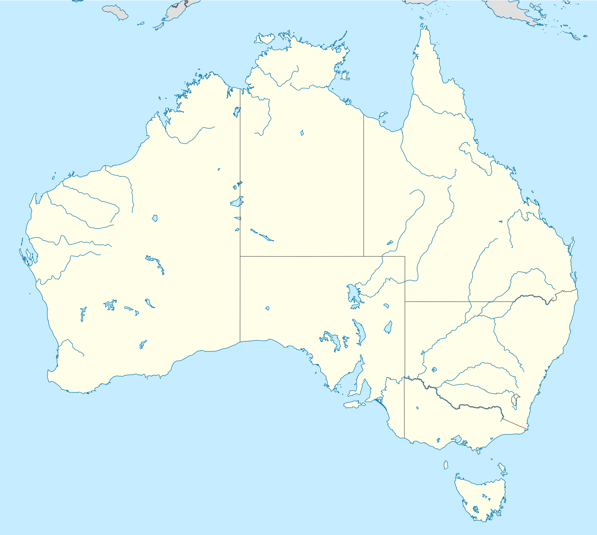
The Torres Strait pearl-fishing crew (Bush- and Mission-raised) was examined at sea and has no single fixed location, so it isn't plotted above — see the chart and stops below for its figures.
Diet and decay, reservation by reservation
Percent of teeth with dental caries · every group Price tabulated in Australia
Eight plates from the chapter
Original figure numbers and captions, Price's own
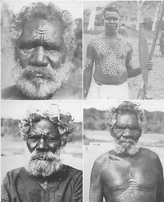
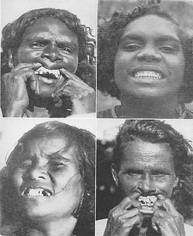
Isolated & Modernized Torres Strait Islanders
Price crossed into the Torres Strait — the scatter of islands between Australia and New Guinea — to test his pattern a new way: not isolated villages against modernized ones, but six islands ranked by the one variable he could actually measure, the number of years a government trading store had been sitting on each.
Source text: Project Gutenberg Australia, eBook No. 0200251h
Summary
This chapter narrows the lens to six islands in the Torres Strait, home to Papuan, Malay and other stocks with no direct connection to Australia's mainland peoples. The Australian government had installed a trading store on each island at a different time, stocked with “white flour, polished rice, canned goods, and sugar” and funded, in part, by the profit those same stores turned. That gave Price something he rarely had elsewhere: not just isolated versus modernized, but a rough clock, island by island, of exactly how long store food had been available.
The results tracked the calendar almost exactly. Badu Island, with a government store for twenty-three years — the longest of any island in the group — had the worst teeth in the survey: 20.6 percent of all teeth decayed, 95 percent of individuals affected. Murray Island, where a store had only just gone in, ran 0.7 percent, close to complete immunity, and its people were vocal enough about not wanting it that Price's own landing there nearly turned confrontational. Yorke and Darnley fell in between, roughly tracking their own stores' ages. On Thursday Island, the administrative center, men working the pearling fleets held at 3.6 percent decayed until they switched onto boat provisions, at which point cavities went deep enough that the pain of underwater pressure on an exposed pulp chamber forced some divers to give up pearling entirely.
On Hammond Island, Price went looking for a family still living entirely off their own land and sea, and found one. Their children's decay rate ran under half the island average, with none of the facial narrowing already showing up in their neighbors' children. He closes the chapter without much editorializing — just a plain description of a people he found remarkably happy, healthy, and nearly free of crime and disease in their native state, and measurably worse on every count within a single generation of store food.
There was a question whether it would be safe for us to land, since on the last visit of the government officials, blood was almost shed because of the opposition of the natives to the government's program.
When the cavities approach or reach the pulp chambers the pain produced in the teeth by the high pressure in deep water produces such agony that they often have to give up pearling.
Weston A. Price, on Hammond Island, Torres StraitAfter examining the children at the mission school, I inquired whether there were not families on the island that were living entirely isolated from contact with modern influences. I was taken to the far side of the island to an isolated family. This family had continued to live on their own resources. They were raising vegetables including bananas, pumpkins, and pawpaws. In the cases of the three girls in the family, one with a child five months of age, only six of their eighty-four teeth had been attacked by tooth decay, or 7.1 per cent, as compared with 16.5 per cent for the entire group on this island. These three girls all had normally developed dental arches and normal features. We inquired about the mother and were told that she was out fishing, notwithstanding the fact that the sea was quite rough. While we were there, she came in with two fish. Here was one of the principal secrets of their happiness and success in life. The Catholic priest who had charge of the mission on this island told me that this family practically never asked for assistance of any kind, and was always in a position to help others. They were happy and well nourished. It is important to note that the progressive degeneration in facial form which occurred in many of the families on the other islands was not found in this family.
What the native diet was
- Fish, large and small, speared from swarming schools — sometimes several at once on a single multi-pronged spear
- Dugong & a great variety of shellfish
- Taro, bananas, papaya & plums, grown abundantly on the more fertile islands
- Pumpkins & other garden vegetables — the Hammond Island family's own crop
What replaced it
- White flour, polished rice, canned goods & sugar — the government store's stock, named exactly in the chapter text
- “Commercial provisions” supplied aboard the pearling boats to crews at sea for months at a stretch
The stores weren't just supplying food — their profits helped fund the colonial administration running the islands, Price noted, an odd incentive sitting underneath the whole arrangement.
Six islands in the Torres Strait
Decay, ranked by years of store contact
Percent of teeth with dental caries · every group Price tabulated in the Torres Strait
Seven plates from the chapter
Original figure numbers and captions, Price's own
Isolated & Modernized New Zealand Maori
Pickerill's study of 326 pre-contact Maori skulls had found decay in barely one tooth in two thousand — by Price's reckoning the most caries-immune race on record. Given a single day in port at Auckland and the full cooperation of New Zealand's government dental service, Price spent eighteen days averaging a hundred miles a day the length of the North Island to see how far that immunity had already slipped.
Source text: Project Gutenberg Australia, eBook No. 0200251h
Summary
New Zealand carried a reputation Price wanted to test directly: the dental surgeon Pickerill had examined 326 Maori skulls — his own and Mummery's combined — and found caries in only 1.2 percent of individuals, or about one tooth in two thousand once counted tooth by tooth. That made pre-contact Maori, by Pickerill's own comparison, more immune to decay than even the Arctic Eskimo. The New Zealand government met Price's ship at Auckland with a car, a guide, and a standing offer of help arranged two years in advance; a Maori member of Parliament, Aparana Ngata, helped plan the route.
Over eighteen days Price and his party averaged roughly a hundred miles a day, reaching twenty-five districts up and down the North Island, home to over 95 percent of New Zealand's 70,000 Maori. Detailed examinations in twenty-two school districts covered 535 individuals and 15,332 teeth; 3,420 of those teeth, 22.3 percent, had been attacked by decay. The most modernized groups ran 31 to 50 percent; the most isolated group held at 2 percent. Dental-arch deformity, essentially absent in the older generation, ran 40 to 100 percent in the modernized groups' children.
The clearest single contrast came at Pukerora Tubercular Sanatorium, where forty young Maori living entirely on institutional food showed dental-arch abnormalities in 90 percent of adults and 100 percent of children. On the Mahia Peninsula, by contrast, children raised on the abundant local seafood had only 1.7 percent of their teeth decayed. New Zealand's own dental service was already racing to meet the problem: trained women dental nurses staffed free clinics beside public schools across the country, treating children up to age twelve with a thoroughness Price rated above what he had seen from dentists in America.
This is lower even than the Esquimaux, and shows the Maori to have been the most immune race to caries, for which statistics are available.
The breakdown of these people comes when they depart from their native foods to the foods of modern civilization — foods consisting largely of white flour, sweetened goods, syrup and canned goods.
Weston A. Price, on Maori daily exercise, with Sir Arbuthnot LaneProbably few primitive races have developed calisthenics and systematic physical exercise to so high a point as the primitive Maori. On arising early in the morning, the chief of the village starts singing a song which is accompanied by a rhythmic dance. This is taken up not only by the members of his household, but by all in the adjoining households until the entire village is swaying in unison to the same tempo. This has a remarkably beneficial effect in not only developing deep breathing, but in developing the muscles of the body, particularly those of the abdomen, with the result that these people maintain excellent figures to old age.
Sir Arbuthnot Lane said of this practice: “As to daily exercise, it is shown here that every person capable of movement can benefit by it, and I am certain that the only natural and really beneficial system of exercise is that developed through long ages by the New Zealand Maori and their race-brothers in other lands.”
What the native diet was
- Sea clams, gathered by hand at low tide on the open shore
- Paua (abalone) & toharoa, a large mollusk found only in New Zealand
- Edible kelp, used abundantly by these and other sea-bordering races
- Fern root, gathered wild in great quantity, and grubs sought out as a prized delicacy
What replaced it
- White flour, sweetened goods, syrup & canned goods — named exactly in the chapter text as the foods of modern civilization
- Institutional rations at boarding colleges and sanatoria, replacing native foods entirely for young people sent to live there
At Pukerora Sanatorium, forty Maori living on institutional food alone showed the sharpest single break from the pattern Pickerill found in pre-contact skulls.
The length of the North Island, eighteen days
Ninety-five percent of New Zealand's Maori live on the North Island, shown above at full extent; the South Island, home to about 2,000 Maori, is not pictured. Sixteen smaller districts Price also visited — among them Raukokore, Te Kaha, Ruatoki, Rotorua's neighboring Tehoro and Waiomio, Kaikohe's neighboring Te Ahuahu and Whakarara, Manukau, Rawene, Ellerslie and Queen Victoria School at Auckland — are folded into the districts above rather than plotted individually.
Decay, from untouched skulls to modern groups
Percent of teeth with dental caries · every group Price and Pickerill tabulated for the Maori
Seven plates from the chapter
Original figure numbers and captions, Price's own
Ancient Civilizations of Peru
Along Peru's rainless desert coast, fed by the cold Humboldt Current, Price turned from living villages to the dead — a thousand miles of burial ground holding, by his own estimate, fifteen million mummies. In 1,276 ancient skulls he did not find one deformed dental arch; in a few fishing villages nearby, descendants of the same Chimu culture, still eating the old way, carried the same broad, healthy faces four centuries after Pizarro.
Source text: Project Gutenberg Australia, eBook No. 0200251h
Summary
Peru's coast is one of the driest places on earth, a forty-to-hundred-mile-wide desert running over a thousand miles between the Andes and the sea, watered only by rivers fed from mountain snowmelt. What made it habitable was the Humboldt Current, sweeping cold water up from the Antarctic and feeding, by Price's account, the richest fishing grounds on the planet — guano islands where a single flock numbered in the millions of birds, sea-lion rookeries over a million strong, and fish beyond counting. Successive cultures — the Chimu in the north, the Naska to the south, the Tiahuanaco culture around Lake Titicaca, and finally the Inca — built cities, temple complexes, and hundred-mile irrigation aqueducts to turn river-bottom desert into farmland, and buried their dead in mounds now estimated to hold fifteen million mummies.
The engineering and surgical evidence Price documented was extraordinary in its own right: an intact aqueduct his guide had walked for thirty-five miles, capable by modern estimate of delivering sixty million cubic feet of water a day; fortress walls at Sacsahuaman fitted so precisely that a knife blade couldn't find the seam; and skulls showing successful trephination — brain surgery performed with flint and bronze tools, sometimes finished with a protective gold plate, with 62 percent of patients showing bone healing that meant they'd lived for months or years afterward.
The dental record was just as striking. In a personal examination of 1,276 ancient Peruvian skulls, Price did not find a single one with a significantly deformed dental arch — against 25 to 75 percent of people in modern American communities. A separate study of fifty mummies found only four with any carious tooth, roughly 8 percent of individuals affected, next to the 95 to 100 percent Price cites for modernized communities generally. Near Trujillo, he found living Chimu descendants — fisherfolk who still worked the surf in small boats — whose faces and teeth matched the skulls in the burial mounds behind them.
In a study of 1,276 skulls of these ancient Peruvians, I did not find a single skull with significant deformity of the dental arches.
It is as though the stones were plastic and pressed into a mould.
Weston A. Price, meeting a Chimu descendant near TrujilloWe were very fortunate in having the assistance of Commander Daniel Matto of the Peruvian Army. He was able to utilize the police facilities for locating typical old residents who could tell us much of the story of their race and its recent history as it had been handed down by word of mouth. In Fig. 80 will be seen one of these nonagenarians. He told us of incidents that had been related to him by his great-great-grandfather and by the old people of that area, of the coming of Pizarro four hundred years ago. The height of this man can be judged as he is seen standing beside Mrs. Price, who is five feet three. His head is shown both front and side view, revealing the flattened surface at the back. An ancient skull with typical flattening is also shown. Fortunately these people are living very closely in accordance with the customs of their ancestors. They are fisherfolk, with a hardihood and skill that is in striking contrast with the lethargy of the modernized groups.
What sustained the ancient coast
- Fish & shellfish in the abundance created by the cold Humboldt Current, the richest marine food source Price had ever seen
- Corn, beans, squash & quinoa, grown in river bottoms watered by aqueducts up to a hundred miles long
- Guinea pigs, kept in a colony by every household as a standing meat supply
- Potatoes, preserved by freezing and drying into a storable powder; llama & alpaca in the high Sierra
What replaced it, elsewhere
- Price didn't examine a modernized Peruvian population directly in this chapter — the comparison figures here come from modern communities generally
- He pointed to the same pattern already showing on North America's Pacific coast, where modernized Indian communities using white flour and canned goods had 40 percent of all teeth decayed
The Chimu descendants he did find near Trujillo were the exception: still fishing the old way, still eating the old diet, and still carrying the broad, sound dental arches of their ancestors' skulls.
Desert coast to the high Sierra
Price's own printed route map lists twenty-five waypoints from Panama to the Amazon-edge town of Perene — most of them coastal ports and rail stops along the journey rather than sites he describes examining. Only the eight places named in the chapter text are plotted above; northern Peru's coast and the high Sierra around Cuzco, shown here at full extent, cover the great majority of the ground the chapter actually discusses.
Ancient immunity, modern collapse
Two measures Price cites for the ancient Peruvians, set against his modern comparison figures
Nine plates from the chapter
Original figure numbers and captions, Price's own
Isolated & Modernized Peruvian Indians
High in the Andes and deep in the Amazon basin, Price found living descendants of Peru's old cultures — Aymara weavers by Lake Titicaca, Quichua herders in the shadow of the Incas' mountain capital, and a jungle tribe near the Amazon's headwaters. In the most isolated of these groups, careful examination turned up not one decayed tooth; in the group nearest the modern world, the same collapse Price had documented everywhere else on his travels was already well underway.
Source text: Project Gutenberg Australia, eBook No. 0200251h
Summary
The high Andean plateau runs the length of Peru, cold at night year-round but warmed by bright equatorial sun by day, grazed by llama and alpaca herds that never need to be moved off the mountain. Price went looking for living descendants of the old stone-working cultures: Aymara-speaking farmers and weavers near Lake Titicaca, and Quichua-speaking herders — direct descendants of the Inca — in the mountains around Cuzco. Their history since the Conquest was brutal; Price notes the Inca ruler's ransom of a room filled with gold, paid and then broken, and an estimated six million Indians dead in the Spanish mines under forced labor. In the high mountains they still keep largely to themselves, weaving their own cloth and herding their own animals, coming down only to trade.
In the Urubamba Valley near Cuzco, an examination of twenty-five Quichua Indians found that not one tooth had been attacked by decay at any age. The same near-total immunity, and the same broad, well-formed dental arches, showed up again and again — tempered by heavy wear from rough foods like parched corn eaten cold and dry. Chewing coca leaves for endurance was universal and ancient; Price found the same leaves buried with coastal mummies and the same trephine operations in Andean burial caves that he'd already documented on the coast.
The comparison came from within the same region. At Huaraz, high in the north, Price found a wide range of isolation and contact side by side — older residents still showing high immunity, modernized adolescents in the local schools already showing the familiar change in facial and dental-arch form. At Chiclayo, tied to Lima by rail and thick with tourist trade in Indian wares, degeneration was typical rather than exceptional. The clearest single contrast, though, came in the Amazon: a jungle tribe near the Perene Colony, met by special arrangement in full ceremonial dress, in whose entire group Price did not find a single decayed tooth — against a neighboring tribe of the same stock, already reshaped by a nearby mission, where tooth decay ran rampant and the first modernized generation showed narrowed faces and crowded teeth.
In the entire group associated with this chief I did not find a single tooth that had been attacked by dental caries.
It is recorded that some six million of them died in the mines under forced labor and poor foods under the lash of their Spanish oppressors.
Weston A. Price, meeting the jungle tribe at PereneWe were privileged to meet by special arrangement about thirty of this tribe who had been brought from some distance by the officials of the Perene Colony, owned and operated by the Peruvian Corporation. In Fig. 89 will be seen the chief and one of the noble women of his retinue. They understood that they would have their pictures taken and came dressed in royal regalia. Typical countenances are seen in Figs. 90 and 91. These people have very kind faces with broad dental arches, and a high sense of humor. They decorated their faces especially for their photograph. In the entire group associated with this chief I did not find a single tooth that had been attacked by dental caries. The fine dental arches are illustrated in Figs. 90 and 91. Many of these young men had really noble countenances, such as would rate them as leaders in modern science and culture.
What sustained them
- Llama, alpaca & guinea pig in the high Andes, alongside parched corn and beans eaten cold and dry
- Coca leaves, chewed with plant ash for endurance on long mountain journeys
- Fish from Amazon tributary streams, teeming with life in the foothill rivers
- Forest game, wild birds & eggs, and yucca root in the Amazon jungle villages
What replaced it
- Refined-flour products, sugar & sweetened foods, named exactly in the chapter's own closing line
- Canned goods & polished rice completing what Price calls “the typical white man's dietary”
Chiclayo, tied to Lima by rail and busy with the tourist trade in native wares, showed the pattern typically; a mission-influenced jungle tribe neighboring the Perene group showed it most sharply, with rampant decay in one generation.
Andes to Amazon
The Amazon-jungle tribe modernized by a nearby mission, mentioned for its rampant tooth decay, shared the Perene region with the isolated group above but has no separate fixed location in the text, so it isn't plotted as its own point.
Two isolated groups, zero decay between them
The only hard percentages this chapter gives, set against Price's recurring modern-civilization figure
Nine plates from the chapter
Original figure numbers and captions, Price's own
Characteristics of Primitive and Modernized Dietaries
Price steps back from individual expeditions to total up what he'd measured everywhere: using accepted mineral requirements as a yardstick, he calculated exactly how many times richer each native diet was than the store food that displaced it — group by group, mineral by mineral.
Source text: Project Gutenberg Australia, eBook No. 0200251h
Summary
Having surveyed a dozen peoples across the Arctic, the Pacific, Africa, and the Americas, Price turns to the chemistry underneath the pattern. Using the mineral and vitamin requirements published by the nutrition authority Sherman — doubled, then doubled again, to allow for the body's limited absorption and for the stress of growth and pregnancy — he calculated how each native diet measured up against the white flour, sugar, and canned goods that had displaced it. Every native diet he tabulated cleared that fourfold safety margin; every displacing diet fell short of even the basic minimum.
The specific sources varied enormously by geography — dairy and rye in the Swiss Alps, organ meats and bone marrow for the Indians of the far north, shellfish and taro across the Pacific, sea foods and dried kelp in the Andes, insects and wild game in the African interior — but the underlying arithmetic held everywhere. The ratios he worked out ranged from a modest 1.0-fold for Gaelic iron to a 58.3-fold gap in Maori iron and a 49-fold gap in Eskimo iodine. In every single group studied, the fat-soluble activators (what he calls, cautiously, more than just the known vitamins) were at least ten times higher in the native diet.
Price is emphatic on one point: he had, as of this writing, never found a single primitive group building and maintaining excellent bodies on plant foods alone. Every successful native diet he catalogued drew its fat-soluble activators from one of three animal sources — dairy, organs, or the sea — and he treats vitamin D specifically as something the human body cannot manufacture in adequate quantity from sunlight or vegetables alone, whatever the marketing claims of the day suggested.
As yet I have not found a single group of primitive racial stock which was building and maintaining excellent bodies by living entirely on plant foods.
It is store food which has given us store teeth.
Weston A. Price, recounting a prospector's rescue in northern CanadaOne day he almost ran into a mother grizzly bear and her two cubs. Fortunately, they did not attack him but moved off. He sat down on a stone and wept in despair of ever seeing his family again. As he sat there holding his throbbing head, he heard a voice and looked up. It was an old Indian who had been tracking that grizzly bear. He recognized this prospector's plight and while neither could understand the language of the other, the Indian after making an examination of his eyes, took him by the hand and led him to a stream that was coursing its way down the mountain. Here as the prospector sat waiting the Indian built a trap of stones across the stream. He then went upstream and waded down splashing as he came and thus drove the trout into the trap. He threw the fish out on the bank and told the prospector to eat the flesh of the head and the tissues back of the eyes, including the eyes, with the result that in a few hours his pain had largely subsided. In one day his sight was rapidly returning, and in two days his eyes were nearly normal.
Where the fat-soluble activators came from
- Dairy — Swiss Alps, Arabs on camel's milk, northern India and Tibet on musk-ox and sheep butter
- Organs & eggs — far-northern Indians, Plains buffalo hunters, Andean tribes
- Animal life of the sea — Pacific islanders and coastal peoples worldwide
- Small animals & insects — interior Australian Aborigines, interior African tribes; ants, locusts and lake-fly swarms gathered and dried
What the ratios came out to
- Every native diet tabulated provided at least four times the minimum mineral requirement Price set as a safety margin
- Every displacing diet of white flour, sugar, polished rice and canned goods fell short of even the bare minimum
- Fat-soluble activators ran at least ten-fold higher in every native diet, without exception
The specific ratios ranged from 1.0-fold (Gaelic iron) to 58.3-fold (Maori iron) — see the chart below for the full comparison, mineral by mineral, group by group.
The native-diet advantage, by group
Calcium content of the native diet as a multiple of the displacing modern diet — Price's own tabulation
Three plates from the chapter
Original figure numbers and captions, Price's own
Primitive Control of Dental Caries
Price turns from diagnosis to treatment: could the same nutritional principles that protected isolated peoples also stop active tooth decay in his own Cleveland patients? Across hundreds of case histories and thousands of saliva analyses, he found the answer was consistently yes.
Source text: Project Gutenberg Australia, eBook No. 0200251h
Summary
Price divides the successful primitive diets into four practical sources of fat-soluble activators — dairy, organ meats, sea foods, and small animals or insects — and argues the specific source matters less than the quantity, which is why a farm family and a fishing family can both build sound teeth from entirely different larders. His own clinical program, refined over years in Cleveland, centered on a small daily dose of high-vitamin butter oil mixed with high-vitamin cod liver oil, alongside a diet stripped of sugar and white flour and rebuilt around freshly ground whole grains, whole milk, bone marrow, and organ meats.
The results, tracked through more than 2,800 saliva analyses, were dramatic and repeatable. Seventeen patients with 237 open cavities among them developed only two new cavities in the three years after starting the program — a 250-fold drop from the rate that had produced those original 237. A wider group of fifty, followed for one to six years, saw an incidence of just 0.14 percent. Individual case histories he tracked over years show the same pattern reversing itself the moment patients stopped the program and resuming control the moment they restarted it.
Two independent field studies reached him as he was closing the chapter. In East Greenland, Danish researchers found isolated Eskimos with well under 1 percent of teeth decayed, and active decay wherever contact with store food had begun — matching his own Alaska data almost exactly. At the Hukarere school for Maori girls in New Zealand, a modest trial using only cod liver oil and malt, without the fuller mineral reinforcement Price recommended, still raised the test group's resistance by 41.75 percent over the control group in six months.
This does not require either permission or prescription but it is the inherent right of every individual. A properly balanced diet is good for the entire body.
Foods as Nature makes them have much more nutritional value than after they are processed so that insect life cannot live on them. When foods cannot support insect life they cannot support human life.
Weston A. Price, on a patient identified only as J. H.Among the group of seventeen J. H., sent in from another city, had thirty-eight open cavities in June, 1931. In addition to active caries, he had quite disturbing heart symptoms, which curtailed his activity, and he also had a marked sense of lassitude and weariness. He has been on the reinforced nutritional program during the fall, winter and spring of each year since that time. During this time, he has not developed a single new cavity. The density of all the teeth has progressively improved as evidenced by Roentgen-ray records. His physical condition has been greatly improved so that he is able to carry on his college activities and heavy outside work to earn money to maintain his college expenses. He is not conscious of a heart limitation. When asked what the principal change was that he had noticed, he said that in addition to not feeling tired, he was more rested with six hours' sleep than formerly with ten hours'.
The reinforced noon meal
- Tomato or orange juice with a teaspoon of high-vitamin cod liver oil and butter, to open the meal
- A pint of stew built from bone marrow and finely chopped meat, with plenty of carrots
- Cooked fruit and rolls of freshly ground whole wheat, spread with high-vitamin butter
- Two glasses of whole milk; fish chowder or organ meats rotated in through the week
What it replaced at home
- Strong, heavily sweetened coffee and white bread, most days' entire nutrition
- Pancakes of white flour eaten with syrup; doughnuts fried in vegetable fat
This one reinforced meal a day, chemically analyzed at 1.48 grams of calcium and 1.28 grams of phosphorus per serving, was enough on its own to exceed the accepted daily minimum — and it completely controlled decay in every child in the group.
Before and after, reinforcing the diet
Percent of teeth with active or new decay · Price's own clinical tracking
Two plates from the chapter
Original figure numbers and captions, Price's own
One Origin of Physical Deformities
Price makes his case against the era's standard explanation for facial and dental-arch deformity — the mixing of racial bloodlines — by pointing to full-blooded siblings, photographed side by side, in which only the younger child shows the injury.
Source text: Project Gutenberg Australia, eBook No. 0200251h
Summary
Price opens with two portraits meant to establish a baseline: four Melanesian men from four different islands who could pass for brothers, and four Polynesian women from four different archipelagos who could pass for sisters — unrelated people whose shared heredity reproduced the same face with striking precision. Against that baseline, he sets photograph after photograph of full-blooded siblings, taken across a dozen of the peoples covered in earlier chapters, in which the older child carries the tribal pattern intact and a younger child, born after the parents adopted modern food, does not. Since no racial mixing occurred in any of these families, Price argues the deformity cannot be a hereditary throwback — it has to be something that happened during that particular child's own formation.
He backs the pattern with Dr. D. P. Murphy's records from the University of Pennsylvania: an examination of 130,132 death certificates that turned up 1,476 documented deformities, traced through field visits to 405 families with adequate histories. Malformation recurred in siblings of an affected child twenty-four times more often than in the general population, and miscarriages and stillbirths clustered in the pregnancies immediately before and after the affected birth — evidence, Murphy concluded, of a temporary decline in reproductive capacity rather than a fixed hereditary trait.
Price closes by pointing out that several of the primitive peoples he studied had already reached a version of this conclusion on their own, through birth-spacing customs that gave mothers years, not months, to recover between pregnancies — a practice he lays out in detail in the next chapter's discussion of the parents' physical condition at conception.
When, however, marked divergences appear without mixing of racial stocks, the result is not due to heredity, but occurs in spite of heredity.
The birth of a congenitally malformed child may be only one expression of a prolonged decrease in functional reproductive activity, the other expressions being miscarriages, stillbirths, and premature births.
G. T. Baden, “Among the Ibos of Nigeria” (1921), quoted by PriceIt is not only a matter of disgrace but an actual abomination, for an Ibo woman to bear children at shorter intervals than about three years. . . . The idea of a fixed minimum period between births is based on several sound principles. The belief prevails strongly that it is necessary for this interval to elapse in order to ensure the mother being able to recuperate her strength completely, and thus be in a thoroughly fit condition to bear another child. Should a second child be born within the prescribed period the theory is held that it must inevitably be weak and sickly, and its chances jeopardized.
Nine plates from the chapter
Original figure numbers and captions, Price's own
Prenatal Nutritional Deformities and Disease Types
Price turns to animal experiments to isolate the mechanism directly: withhold vitamin A from a mother before and during pregnancy, and the offspring arrive with gross, specific defects — regardless of how sound the parents' own bloodline was.
Source text: Project Gutenberg Australia, eBook No. 0200251h
Summary
Price opens with photographic evidence from tuberculosis wards in Alaska, New Zealand and Hawaii, where every young patient he examined showed disturbed facial and dental-arch development — at the Maori hospital, 91.2 percent had visibly deformed arches, and at the Hawaiian hospitals the figure reached 100 percent. He connects this to Dr. George Draper's work at Columbia, which had already linked face and jaw structure to broader disease susceptibility, or diathesis, from an entirely different clinical angle.
The chapter's real weight falls on Professor Fred Hale's pig experiments at Texas A&M. Depriving sows of vitamin A before and shortly after mating produced fifty-nine piglets across six litters with no eyeballs at all, plus cleft palates, club feet, and deformed ears; a single dose of cod liver oil given two weeks before a later mating produced piglets with partial eyes instead of none. Crucially, when blind pigs bred by blind pigs were both given adequate vitamin A, their offspring had normal eyes — proof, Hale argued, that heredity wasn't the mechanism, since a true genetic defect would have persisted regardless of diet. Parallel studies found similarly stark patterns on the paternal side: sperm-abnormality rates ran to 75 percent in chronic alcoholics and in men with hereditary blindness, against 19 percent in the general population.
Price closes with a case from his own fieldwork: a full-blooded Eskimo woman, twenty-six pregnancies, no tooth decay of her own on her native diet, married to a white man with rampant decay on his imported one — and several of their children showing incomplete facial and dental-arch development, raising the question of whether the father's nutrition, not just the mother's, had shaped the outcome.
If an hereditary factor had been the cause of this congenital blindness, these matings would have produced some blind pigs, even if vitamin A were present in the ration.
The more we come to view man as a totality… the more do all the special branches of medicine become fused with the general concept… the relation of the human organism as a whole to those various reactions of maladjustment with environment which we call disease.
Weston A. Price, on captive lion breeding and organ meatThe story is told of a trip to Africa made by a wild animal specialist from the London zoo for the purpose of obtaining additional lions and studying this problem. While in the lion country, he observed the lion kill a zebra. The lion proceeded then to tear open the abdomen of the zebra and eat the entrails at the right flank. This took him directly to the liver. After spending some time selecting different internal organs, the lion backed away and turned and pawed dirt over the carcass which he abandoned to the jackals. The scientist hurried to the carcass and drove away the jackals to study the dead zebra to note what tissues had been taken. This gave him the clue which when put into practice has entirely changed the history of the reproduction of the cat family in captivity. The addition of the organs to the foods of the captive animals born in the jungle supplied them with foods needed to make reproduction possible. Their young, too, could reproduce efficiently… whereas the price of lions used to be fifteen hundred dollars for a good specimen, they were now so plentiful that they would scarcely bring fifteen cents.
Defective sperm, by condition
Percent of morphologically abnormal spermatozoa · studies Price cites from Berlin and Cornell
Seven plates from the chapter
Original figure numbers and captions, Price's own
Physical, Mental and Moral Deterioration
Price extends his argument into the prison and the reform school: examining the same facial and dental-arch markers he'd tracked across a dozen native peoples, he found them running through Cleveland's delinquency courts, its state penitentiary, and its schools for the backward almost without exception.
Source text: Project Gutenberg Australia, eBook No. 0200251h
Summary
Price surveys a ladder of institutions, from mild to severe. At Cleveland's Outwaithe School for backward children, 97 percent had abnormal dental arches. At the Thomas A. Edison School for pre-delinquent boys, the figure reached 98.4 percent. Touring the Ohio State Penitentiary, he did not observe a single normal face among the roughly two thousand men he could see at work or exercise. He sets this against Tredgold's clinical survey of deformed palates by population: 19 percent in the ordinary population, 33 percent among the insane, 55 percent among criminals, and 61 percent among idiots — a gradient that tracks severity of social and mental impairment almost exactly.
He traces the underlying mechanism to the pituitary gland at the base of the skull, which governs both facial growth and several other hormonal systems, and to its dependence on vitamin E. Citing Dr. Hector Mortimer's work at McGill, he notes that surgically removing a young rat's pituitary produces the same narrowed muzzle and dental arches seen in modernized human children — and that restoring pituitary extract prevents the defect entirely. Mongoloid births, the most severe expression Price documents, correlate overwhelmingly with maternal age: mothers 40 to 44 had 75 times the normal rate, and mothers 45 to 49 had 125 times the normal rate, in the 1934 U.S. birth data he cites.
The chapter's most vivid case is his own: a sixteen-year-old with the physical and mental profile of a Mongoloid idiot, whose dental arch was so constricted his upper teeth sat entirely inside his lower ones. Price surgically widened the boy's upper jaw by half an inch over thirty days, mechanically stimulating the pituitary through pressure on the floor of the skull. Within twelve weeks the boy had grown three inches, developed adult secondary characteristics, and gained years of mental and social capacity — a transformation Price presents as double-edged: it made the boy more capable, and also, for the first time, a genuine risk to those around him.
Criminal tendencies in isolated primitives are so slight that no prisons are required. In Uganda, Africa, the Ruanda tribes, estimated to number two and a half millions, had no prisons.
Deformed palates are present in 19 per cent of the ordinary population, 33 per cent of the insane, 55 per cent of criminals, but in no less than 61 per cent of idiots.
Weston A. Price, on a sixteen-year-old patient's jaw-widening treatmentWith the movement of the maxillary bones laterally… there was a very great change in his physical development and mentality. He grew three inches in about four months. His moustache started to grow immediately; and in twelve weeks' time the genitals developed from those of a child to those of a man, and with it a sense of modesty. His mental change was even more marked… In a few weeks' time he passed through stages that usually take several years. At first, he got behind the door to frighten us; later, he put bent pins on chairs to see us jump when we sat down, and finally he became the cause of a policeman's coming to the office from where he was conducting traffic on the corner below to find who it was squirting water on him when his back was turned. He developed a great fondness for calling people over the telephone, wanted to borrow my automobile to take his mother for a drive, and with his arm caressingly about the shoulders of one of the secretaries, invited her to go with him to a dance. All this change developed in about twelve weeks.
Deformed palates, by population
Percent with a malformed palate · Tredgold's clinical survey, quoted by Price
Five plates from the chapter
Original figure numbers and captions, Price's own
Soil Depletion and Plant and Animal Deterioration
Price traces the chain back one link further, past the parents and their food to the ground the food grew in: American topsoil, farmed for generations without adequate replenishment, was measurably running out of the same minerals his human subjects were going without.
Source text: Project Gutenberg Australia, eBook No. 0200251h
Summary
An acre of tilled soil holds roughly two million pounds of earth to a depth of seven inches, of which about two thousand pounds is phosphorus — enough, Price calculates, for perhaps a hundred crops if half of it were usable at all. Every bushel of wheat, every gallon of milk, every pound of wool shipped off a farm carries part of that phosphorus away permanently, and American soil had been shipping it away for decades faster than rain, rot, and root systems could put it back. Government officials told him productivity had dropped 25 to 50 percent in many districts over fifty years, and that replenishing the phosphorus alone would run fifty dollars an acre.
Price traces the same depletion through the animals raised on that soil. A high-producing Texas dairy cow on depleted pasture ran a daily deficit of 60 grams of phosphorus and 160 grams of potassium; cattle in some districts couldn't maintain their own bodies, let alone reproduce. He sets this against places where the mineral cycle still closed: the Nile's annual flood renewing Egypt's fields from the African interior, the Yangtze and Yellow Rivers doing the same for China, and the Loetschental Valley in Switzerland, where twelve centuries of careful manuring had kept the same ground productive without importing a single sack of fertilizer.
The chapter closes on the counter-example of American erosion — dust storms burying fences and outbuildings in the Western states, silt filling reservoirs built to stop the very floods the lost topsoil had caused, and only about 45 percent of U.S. land still usable for agriculture or grazing at all. Price's point in laying out the geology is direct: no nutritional program, primitive or modern, can outrun a food supply grown on ground that has nothing left to give it.
What is lent by earth has been used by countless generations of plants and animals now dead and will be required by countless others in the future.
The mothers of this last generation were far less fit physically for reproduction than their mothers or grandmothers had been.
Weston A. Price, recounting a Western rancher's accountIn one of my trips to the Western States I visited a large ranch of some fifty thousand acres. I asked the rancher whether he was conscious of a depletion in the soil of the ranch in its ability to carry pasture cattle. He said that it was very greatly depleted, that whereas formerly the cows on the ranch were able to produce from ninety-three to ninety-five healthy calves per hundred cows annually, nearly all of sufficiently high physical quality to be available for reproductive purposes, now he was getting only forty to forty-four calves per hundred cows annually and usually only ten or eleven of these were physically fit for reproductive purposes. He stated also that he was able to raise as many calves for restocking the ranch on the plant food produced on the fifty acres to which he was applying a high fertilization program as on the rest of the fifty-thousand-acre ranch. Of late most of the calves for the ranch had to be imported from other states.
Practical Application of Primitive Wisdom
In his closing chapter, Price turns the whole study into a set of recommendations: nutrition for both parents should begin months before conception, not after a pregnancy test, and the primitive world had already worked out, tribe by tribe, exactly which foods that meant.
Source text: Project Gutenberg Australia, eBook No. 0200251h
Summary
Price closes by cataloguing how, exactly, primitive peoples prepared for parenthood before it began. Masai girls in parts of Africa waited to marry until the cows were on fresh spring grass, and drank that milk for months beforehand; several African tribes fed girls special rations for six months before marriage; Fiji chiefs held a feast the moment a pregnancy was announced and assigned young men to fetch sea foods for the mother daily thereafter. Fish eggs turn up across unconnected cultures — Eskimo, Peruvian coastal and highland, Pacific Islander — as a food specifically reserved for women preparing for or undergoing pregnancy, while fathers-to-be in several groups received their own reinforcement: moose thyroid for Indians of the far north, salmon milt for Eskimos, the angelote organ for coastal Peruvians.
Birth spacing follows the same pattern everywhere Price looked: two and a half to four years between children, enforced by custom, taboo, or the practical mechanics of prolonged nursing. He contrasts this directly with a modern study by Dr. Wayne Brehm of 540 obstetrical cases: mothers given synthetic calcium and viosterol showed heavier placental and kidney calcification and longer, harder labor than mothers given nothing at all — a natural-foods argument delivered, unusually, by a synthetic-vitamin trial gone wrong.
The book's final case is Price's own: a mother whose first child, born without any special nutritional preparation, took fifty-three hours to deliver and left her a partial invalid for months; her second, born after Price reinforced her diet with milk, sea foods, organ meats, and high-vitamin butter and cod liver oil, took three hours, with no lasting effect on her health at all. He closes the entire study not with a final data table but with an image: a Fiji woman walking miles to gather one particular crab for her unborn child, and a poem about the pulse of the earth beating in time with a human heart.
The most indelible impression that is left by my investigations among primitive races, is that which came from examining 1,276 skulls… without finding a single skull with the typical marked narrowing of the face and dental arches.
The civilization of the White man is a failure; it is visibly crumbling around us. It has failed at every crucial test.
Weston A. Price, comparing one mother's two laborsThe history of these pregnancies is of interest. The duration of labor for the first child was fifty-three hours and for the second three hours. Following the birth of the first child the mother was a partial invalid for several months. Following that of the second child the experience of childbirth made but slight impression on the strength and health of the mother. During the first pregnancy no special effort was made to reinforce the nutrition of the mother. During the second pregnancy the selection of foods was made on the basis of nutrition of the successful primitives. This included the use of milk, green vegetables, sea foods, organs of animals and the reinforcement of the fat-soluble vitamins by very high vitamin butter and high vitamin natural cod liver oil. It is a usual experience that the difficulties of labor are greatly decreased and the strength and vitality of the child enhanced where the mother has adequately reinforced nutrition along these lines during the formative period of the child.
What primitive mothers-to-be relied on
- Fish eggs — Eskimo, Peruvian coastal and highland, and Pacific Islander mothers alike
- Special organs — moose thyroid and salmon milt for fathers-to-be in the far north; the angelote organ in coastal Peru
- Sea foods gathered specifically for pregnancy — the Fiji lobster-crab, fetched fresh daily once a pregnancy was announced
- Iodine-rich plant ash — dried kelp in the Andes, burned water hyacinth in the African interior, both to prevent goiter in mother and child
What modern medicine offered instead
- Calcium tablets and synthetic viosterol, the standard prenatal reinforcement of Price's day
- In Dr. Brehm's 540-case study, the calcium-and-viosterol group showed the heaviest placental and kidney calcification and the longest, hardest labor of all six groups tested
The group given nothing at all did better on every measure than the group given synthetic calcium and vitamin D — Price's closing argument, in miniature, for real food over the pharmacy substitute.
Six plates from the chapter
Original figure numbers and captions, Price's own — the book's last
Flat outstretched upon a mound
Of earth I lie; I press my ear
Against its surface and I hear
Far off and deep, the measured sound
Of heart that beats within the ground.
And with it pounds in harmony
The swift, familiar heart in me.
They pulse as one, together swell,
Together fall; I cannot tell
My sound from earth's, for I am part
Of rhythmic, universal heart.
Elizabeth Odell, quoted in Price's closing lines
THE END — Nutrition and Physical Degeneration, Weston A. Price, D.D.S. (1939)